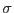

In order to estimate the optimal weights, imweightadd needs two lists: a list of background maps and a list of source relative expectation values .
The first job is to reduce each background map to a single representative value of background counts per pixel. This is done by making a histogram of all the non-zero values in each map and selecting the value which falls nearest the 90% mark on the histogram. The rationale behind this is as follows. Source detection is likely to be most sensitive near the centre of the image; this is also the place where one would expect the maximum to be in the background values. Hence it makes sense to choose a value which is nearer to the maximum value than to the minimum. However there is also the possibility of local increases in background due to out-of-time events or such like. Because of this possibility it was thought undesirable to pluck the background value right from the top of the tree so to speak: hence the 90% figure was arrived at as a compromise.
The next thing is to normalize the s to 1. Naturally at least one of them must be non-zero.
imweightadd then performs a minimisation via a simplex algorithm. The quantity to be minimized is the detection sensitivity as defined in section 3.3. The analogue of equation 2 in the present case is
where
and
as before. At each step, equation 6 is inverted numerically via a Ridders-method algorithm to yield the sensitivity
 . The minimization procedure therefore arrives at the set of weights which yield the minimum value (within convergence limits) of
. The minimization procedure therefore arrives at the set of weights which yield the minimum value (within convergence limits) of
 . These weights are then applied to generate weighted sums of the input images and also the input background maps and exposure maps.
. These weights are then applied to generate weighted sums of the input images and also the input background maps and exposure maps.